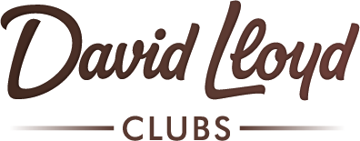

Final Upgrade AISports World México
Proyecto A · Proyecto B
Rediseño Web con enfoque en posicionamiento orgánico.
Revisión de Avance · 7 de agosto de 2026
Rediseño Web + agente BES · Business Development System
Revisión de AvanceAgenda
Sports World — Sistemas
Agenda
Los cuatro puntos propuestos por el equipo de Sistemas, en su orden.
01
Contexto, diagnóstico y objetivos del proyecto
El diagnóstico que dio origen, la solución que proponemos y los resultados esperados.
02
Alcance funcional y entregables
Páginas por club, integraciones, requerimientos técnicos, CMS, el agente BES y los criterios de validación.
03
Observaciones al contrato
Las diez observaciones compartidas por Sistemas, con la cláusula exacta que responde cada una.
04
Avances y siguientes pasos
Lo construido a la fecha, las decisiones requeridas y los responsables.
S
01 DiagnósticoLa fuente de los datos
Antes de los números
Semrush: la fuente del diagnóstico.
Base de datos México · 20,000+ keywords analizadas · 100 páginas rastreadas (febrero–marzo 2026).
Qué es
La plataforma de referencia de inteligencia SEO
Empresa pública (NYSE: SEMR) con una de las bases de búsqueda más grandes del mundo: 25 mil millones de keywords en 140+ países. El estándar de la industria.
Para qué
Medir posiciones, demanda y salud técnica
Qué posición ocupa cada sitio en Google, cuánto se busca cada término, cómo compara contra competidores y qué errores técnicos tiene el sitio.
Confiable
Datos duros donde importa
Posiciones y errores técnicos son observaciones directas, reproducibles por cualquiera. Los volúmenes de búsqueda son estimaciones estadísticas, confiables en lo direccional. Se complementa con las herramientas del propio Google.
La claveLos KPIs del contrato se verificarán con la misma herramienta con la que se construyó el diagnóstico.
01 DiagnósticoEl Gigante Invisible
Marca fuerte. Invisible donde el cliente busca.
0 de 49
páginas de club rastreables por Google hoy
31.1%
cobertura del mercado unbranded
−28.18%
caída anual del tráfico no-marca
~1.23M
búsquedas/mes de alta intención sin capturar
95.23%
del tráfico en solo 2 URLs
La claveGoogle no ve los clubes — y por eso el prospecto no ve a Sports World.
01 DiagnósticoEl caso de referencia
Caso probado en la industria

La cadena premium del Reino Unido partió de la misma paradoja y la misma cobertura (~31%) que Sports World hoy, y ejecutó exactamente esta estrategia: páginas por amenidad + ubicación.
31→74%
cobertura de búsqueda alcanzada
+19%
en membresías (IPA Bronze 2024)
+11pp
de participación de mercado
£137M
de ingreso incremental (econometría verificada)
La claveDavid Lloyd lo logró en 7 años — sin inteligencia artificial.
3
01 DiagnósticoLas causas
Las tres causas del problema.
01
Los clubes no son detectados
El sitio se renderiza en el navegador (client-side); Googlebot no lo ejecuta igual. Las 49 fichas de club no existen para Google, y quien busca "gimnasio cerca de mí" aterriza en el home o en la página genérica de clubes — y cada clic adicional hasta su club pierde 10–30% de los usuarios (20–40% por clic en móvil local).
02
Cero referencia a bajar de peso
Es la intención número uno de la industria — 932,300 búsquedas al mes — y el motivo principal de inscripción. Sports World tiene el producto completo; el sitio cubre el 0.02% de ese universo.
03
La navegación no conecta objetivos con oferta
La gente busca resultados — masa muscular, tonificar, rehabilitación — pero la información vive enterrada en descripciones de clases, en jerga de fitness.
La claveEl sitio tiene la oferta; lo que no tiene es la conexión con lo que la gente busca.
01 DiagnósticoValidación de campo
La operación confirmó el diagnóstico.
157/200
asesores cubiertos por el pre-workshop (78.5%)
15
entrevistas: 6 líderes y 9 asesores
13
clubes, en cinco regiones del país
40×
variabilidad en la conversión reportada
01
Nadie identifica el objetivo real del cliente
Ninguno de los 15 entrevistados tiene un método para descubrirlo — la pérdida ocurre en el primer contacto, cuando el asesor intenta cerrar antes de entender.
02
La objeción de precio es universal
Aparece en las 15 de 15 entrevistas: el valor del ecosistema no se logra articular frente a competencia más barata.
03
El canal de venta opera bloqueado
El 99% del seguimiento corre por WhatsApp personal, que se bloquea a los 50–60 mensajes por día. 8 de 15 piden leads mejor cualificados como su prioridad número uno.
La claveNi el sitio ni la operación entienden el objetivo del cliente. Eso, exactamente, es lo que el proyecto construye.
1
01 La soluciónEl producto
Un producto: la experiencia ideal.
Convertimos la infraestructura de Sports World — 49 clubes, sus clases y sus amenidades — en una experiencia ideal que cubre exactamente lo que el usuario quiere.
→ Al consumidor
La garantía de que tenemos justo lo que necesita
Con los datos vivos de los 49 clubes le responde con precisión: este es tu club, estas son tus clases, esto es lo que Sports World tiene para tus objetivos.
→ A la fuerza de ventas
Un documento hiperpersonalizado para cerrar
El mismo motor produce el brief del asesor: perfil, objetivos declarados, intereses y cómo conducir la venta — antes de que el prospecto pise el club.
La claveCuando el prospecto ve que el club tiene justo lo que busca, decidir la visita se vuelve simple y directo.
01 La soluciónCómo se produce
El instrumento
Un cuestionario de objetivos.
Un minuto del prospecto. Todo lo demás lo hace el sistema.
01
Pregunta objetivos, no fichas técnicas
Qué busca lograr, con quién entrena, dónde vive y trabaja — en lenguaje del consumidor, nunca en jerga de fitness.
02
Menús adaptativos
Omite lo que la página de origen ya reveló — geografía, disciplina u objetivo — y ajusta su copy y sus opciones dinámicamente.
03
Una sola vez, en cualquier canal
El sitio, el agente BES, WhatsApp (Proyecto B) o la consola interna del asesor. El resolver elige el club que cumple la experiencia ideal; la distancia solo desempata.
04
La IA redacta el resultado
Con las respuestas y los datos verificados del club elegido, redacta en el momento la experiencia ideal y el brief del asesor. Nada es plantilla genérica.
01 La soluciónContra los hallazgos
La experiencia ideal responde cada hallazgo.
| Lo que el campo documentó | Cómo lo resuelve la experiencia ideal |
|---|
| Sin método para identificar el objetivo del cliente | Los objetivos quedan capturados antes de que el asesor hable; el brief se los entrega con la venta sugerida. |
| Objeción de precio universal | El valor se articula por objetivo, en lenguaje del consumidor; el brief arma los argumentos con lo que el prospecto declaró. |
| WhatsApp bloqueado; teléfonos equivocados | El prospecto llega validado y con visita agendada; el número queda validado por el propio canal. |
| Conversión varía 40×, sin línea base | El funnel de medición establece la línea base real por club y canal, desde el CRM. |
Abrir el demo · cuestionario y experiencia ideal
La claveCada hallazgo de campo tiene solución de diseño — y es verificable en el demo, en vivo.
01 La soluciónLos canales
Dos proyectos, una sola experiencia.
A
Rediseño Web · 8 semanas
Sitio de 148 páginas rastreable por Google (SSR), el agente BES por voz y texto en el canal web, integración con el CRM vía middleware, y el funnel con dashboard de medición de punta a punta.
B
Business Development System · 8 semanas, en paralelo
La misma experiencia ideal extendida a WhatsApp: leads de campañas atendidos por operadores humanos en tiempo real, con BES de respaldo 24/7 — ataca el tiempo al primer contacto.
La claveEn todos los caminos: experiencia ideal + escritura idempotente al CRM + brief al asesor.
01 Resultados esperadosKPIs
Lo comprometido es verificable.
| KPI comprometido | Línea base | Meta | Verificación |
|---|
| Páginas de club rastreables (SSR) | 0 de 49 | 49 de 49 | Google Search Console |
| Enlaces rotos | 136 | 0 | Semrush Site Audit |
| Schema JSON-LD por club | 0 | 49 | Google Rich Results Test |
| Páginas sin H1 | 11 | 0 | Semrush Site Audit |
| Core Web Vitals | fuera de umbral | LCP < 2.5 s · INP < 200 ms · CLS < 0.1 | PageSpeed Insights |
| Cobertura keywords unbranded | 31.1% | 55–65% | Semrush · a 12 meses |
Targets aspiracionales, no vinculantes (Anexo Cuatro): tráfico 80,000 → 120,000–160,000/mes.
La claveCada KPI cuenta con una herramienta externa e independiente de verificación.
148
02 AlcanceLas 148 páginas
Arquitectura
Una ficha por club, porque ahí decide el prospecto.
Quien busca localmente aterriza directo en la ficha de su club — sin clics intermedios que pierdan usuarios en el camino.
| Componente | Páginas |
|---|
| Fichas de club — datos vivos del CRM, schema HealthClub, agendado | 49 |
| Páginas de clase (7 premium + 47 individuales) | 54 |
| Hubs de amenidad | 10 |
| Perfiles de objetivo + bajar de peso (YMYL con firma médica) + PT | 7 |
| Membresías (hub + 5 planes) | 6 |
| Home + FitKidz + blog inicial | 22 |
| Total | 148 |
La claveHoy: 95% del tráfico en 2 URLs. Nuevo: 148 páginas rastreables, con contenido único y revisión editorial humana.
02 AlcanceIntegraciones
Un solo supuesto: su API estándar.
- 01El middleware del proveedor consume el API estándar del CRM. SW no desarrolla nada a la medida.
- 02Lecturas: clubes, amenidades, clases y tarifas — precios y clases en tiempo real, el resto con sincronización diaria.
- 03Escritura: el lead con día y horario de visita, sin duplicados; la visita se envía por correo al club.
- 04Cierre del funnel: lectura de membresías nuevas — vía API o con cruce dentro de la infraestructura de SW.
- 05Retención: ese acceso permite saber qué segmento es más probable que cancele, por objetivo, club y canal.
- 06Medición: GA4, Search Console y las 49 fichas de Google Business por la API oficial.
La claveSports World solo expone su API estándar y sus datos; todo lo demás lo resuelve el middleware del proveedor.
02 AlcanceRequerimientos a cargo de SW
Lo que necesitamos de Sports World.
| Entrega | Qué incluye | Cuándo |
|---|
| DescubrimientoBloque 0 · Anexo Uno | API gateway, ambiente de pruebas del CRM, telefonía/PBX, identidad (SSO) e incidentes | Antes del inicio |
| Documentación y sandboxBloque A · Anexo Uno | API del CRM en OpenAPI/Swagger, credenciales del sandbox, esquemas reales y Project Owner técnico | Día 1 — arranca el reloj |
| Credenciales productivasBloque B · Anexo Uno | Cuenta de servicio, autenticación, idempotencia, webhooks y SLAs del API | Fin de semana 2 |
| Accesos del sitio actualBloque C · Anexo Uno | Hospedaje, dominio, CDN, repositorio y CMS del sitio actual | Semana 4 |
| Puntos de acceso BESBloque D · Anexo Uno | Consulta de miembro, búsquedas, creación de prospecto y base de conocimiento | En paralelo |
| Marketing y accesosBloque E · Anexo Uno | Brand book, contenidos y accesos Google, Meta y TikTok | En paralelo |
| ServidorBloque F · Anexo Uno | Runtime moderno, TLS, despliegue, staging, respaldos y monitoreo | Antes del despliegue |
La claveCon los Bloques 0 y A entregados, arranca el reloj de las 8 semanas. Todo se sigue en el tablero del depósito, con semáforo.
02 AlcanceEl CMS
El contenido lo administra Sports World.
Sí
Lo que SW edita directo, sin código
Textos de cualquier página, imágenes, coordenadas de cada club. Al guardar, la página publicada se actualiza sola. CMS headless autoalojado en el servidor de Sports World.
No
Lo que no se edita ahí — por diseño
Tarifas, descuentos y promociones: el motor de precios las extrae del CRM y las resuelve por club, ciudad o nivel nacional. El sitio nunca contradice al sistema comercial.
＆
Mantenimiento vs. edición
El mantenimiento lo hace el proveedor bajo la iguala — técnico, BES, soporte 24/7 con SLA. La edición directa es una facultad de SW, no una obligación.
Cómo se navega el panel: espejo de la arquitectura del sitio — Clubes · Clases · Amenidades · Perfiles · Membresías · Blog · Home — con buscador por nombre y vista previa antes de publicar. Cambiar una foto de Santa Fe: Clubes → "Santa Fe" → editar.
La claveEl contenido es de Sports World, sin escribir código; los precios llegan solos del CRM.
B
02 AlcanceEl agente BES
El agente
BES: la experiencia ideal, conversando.
Tres puertas al mismo cuestionario: el sitio (autoservicio), BES (voz y texto) y la consola interna. Un lead llega al CRM idéntico sin importar el canal.
Latencia conversacional < 900 ms, viable con API del cliente en p95 < 500 ms lecturas / < 800 ms escritura. Exclusiones: telefonía y voz por WhatsApp.
01
Concluye la experiencia ideal, asistido
Aplica el cuestionario conversando, resuelve las dudas en el camino para que el proceso no se abandone, y cierra con la visita agendada.
02
Resuelve cualquier duda del club
Horarios, precios, clases, amenidades — con datos reales (nunca inventa), y escala a un humano cuando se lo piden.
03
Atiende el clic de publicidad en tiempo real
Quien llega de un anuncio no espera una llamada: agenda su visita ahí mismo, en el sitio (A) o por WhatsApp (B).
04
Prepara el cierre
Genera el brief del asesor, envía la experiencia ideal por correo y los 2 recordatorios por WhatsApp (24 h y 2 h antes) por el número oficial.
La claveBES convierte el clic del anuncio en visita agendada en el momento — junto con el brief, el mayor potencial de ventas adicionales.
02 AlcanceValidación de entregables
Criterios de validación de los entregables.
| Aprobación de SW | Momento | Valor de etapa |
|---|
| Diseño / página pilar | Fin S2 | 15% |
| 50% del sitio construido | Fin S4 | 35% |
| Pre-lanzamiento | S7 | 35% |
| Lanzamiento en firme | S8 | 15% |
Cada etapa se aprueba por escrito sobre enlaces de vista previa. Plazos de respuesta pactados: 48 horas hábiles por gate.
- 01Quality gates automatizados en cada cambio: pruebas, Core Web Vitals, accesibilidad WCAG 2.2 AA, validación de schema. Si un control falla, no se publica.
- 02Al lanzamiento: verificación de los KPIs con herramienta externa (Search Console, Semrush, PageSpeed, Rich Results).
- 03Después: estabilización de 2 a 4 semanas con corrección sin costo.
La claveSports World aprueba viendo — vistas previas de cada entrega — y nada se publica si un control falla.
03 ContratoObservaciones 1 a 5
Cada observación, respondida en cláusula.
| Observación | Dónde y cómo se responde |
|---|
| 01 · Aceptación tácita de entregables | Décima + Anexo Dos I.4 — aprobación por etapa, por escrito y sobre vistas previas; tácita solo tras 5 días hábiles sin observaciones — cualquier observación escrita la impide. |
| 02 · Costos por cambios post-aprobación | Décima — aplica solo al reabrir una etapa ya aprobada: 50% del valor de esa etapa (pesos 15/35/35/15), proporcional a la etapa afectada. Sin cargo si no reabre lo aprobado. |
| 03 · Cargos de stand-by | Décima Quinta a) — USD $350 por día hábil imputable a SW y documentado; tope acumulado: 25% del pago único. |
| 04 · Retrasos imputables al proveedor | Décima Quinta b) — los absorbe y corrige sin costo; devolución proporcional si la no aprobación le es imputable; garantía de 90 días. |
| 05 · Niveles de servicio | Séptima + Anexo Cinco — soporte 24/7 como obligación de la iguala; crítico: respuesta 15–30 min, resolución objetivo 4 h. |
La claveEl control de cada aprobación — y de la aceptación tácita — queda del lado de Sports World.
03 ContratoObservaciones 6 a 10
Propiedad, datos y economía.
| Observación | Dónde y cómo se responde |
|---|
| 06 · Desglose y justificación económica | Octava VI — pago único e iguala desglosados por componente: siguiente lámina. Horas, perfiles y alcance por entregable: Estrategia Técnica y Anexo Dos, en el depósito. |
| 07 · Código fuente y repositorios | Décima Sexta — cesión irrevocable de todo lo generado para SW; entrega contra liquidación; continuidad sin dependencia. |
| 08 · Responsabilidad, seguridad y datos | Décima Octava — minimización y no retención; cifrado; notificación de vulneraciones en 72 h; el sitio corre en el servidor de SW. |
| 09 · Costos variables de IA, voz y mensajería | Décima Cuarta + Anexo Tres — SW contrata y paga directo a los proveedores, sin intermediación; escenario realista USD $785–$1,550/mes. |
| 10 · Vigencia y renovación de la iguala | Sexta + Novena — $43,000 MXN + IVA desde la estabilización; mínimo 6 meses; renovaciones de 12 con salida avisando 60 días. |
La clavePropiedad total para Sports World, datos que nunca salen de su infraestructura, y el retorno modelable en su propia calculadora.
03 ContratoDesglose económico del Proyecto A
Desglose económico del Proyecto A.
USD $81,000
pago único del Proyecto A — Cláusula Octava VI
USD $35,000
Posicionamiento orgánico y contenido — las 148 páginas, SEO técnico y migración con redirecciones
USD $32,000
Diseño, desarrollo e identidad visual — SSR/ISR, CMS autoalojado e integración por middleware
USD $14,000
Agente BES en el canal web — voz y texto, agendado de visitas y brief al asesor
Iguala mensual de mantenimiento y soporte: USD $2,415.73 (MXN $43,000) más IVA — inicia tras la estabilización y se desglosa por concepto en la misma Cláusula.
Abrir la calculadora de ROI
La claveLa justificación: ~1.23M búsquedas mensuales de alta intención que hoy no se capturan.
04 AvancesLo construido a la fecha
Lo que ya está construido.
El depósito de documentos — 15+ documentos publicados
- ·Resumen Ejecutivo y Auditoría inicial ("El Gigante Invisible")
- ·Arquitectura de Experiencia (UX) — el mapa completo de las 148 páginas y el cuestionario
- ·Estrategia Técnica — stack, middleware, migración, BES y quality gates
- ·Plan de Ejecución — cronograma, gates y riesgos · Seguridad del sitio
- ·Gastos Operativos Variables · Status de Entregables SW · Calculadora de ROI
- ·Minuta y Seguimiento del 22 de junio · Glosario e Índice
- ·BDS — 5 documentos: resumen, flujo, canales, técnica y medición
- ·Contrato + 5 anexos + Addendum del BDS
Además de la documentación
- 01Borrador del contrato entregado y en revisión — API íntegro, middleware, SLA, datos y servidor.
- 02Demo funcional del cuestionario y la experiencia ideal, en línea.
- 03Correcciones de Marketing Digital aplicadas en el demo — captura, brief y filtros.
- 04Workshop discovery con líderes regionales — 157 de 200 asesores.
- 0515 entrevistas de campo en 13 clubes de cinco regiones.
La claveEl proyecto no empieza de cero: investigación, documentación y demo ya existen — todo verificable en el depósito.
04 Siguientes pasosDecisiones
Siete decisiones destraban el arranque.
| Decisión | Responsable |
|---|
| Cruce punto por punto de las diez observaciones de Sistemas y alineación con Legal | Sistemas · FUPAI |
| Revisión de Legal al contrato | Legal |
| Firma del Contrato (A) y del Addendum del BDS (B) | Dirección |
| Designación del Project Owner y del responsable de Marketing/Marca | Dirección |
| Entrega de Bloques 0 y A — arranca el reloj de las 8 semanas | Sistemas |
| Definición del servidor (Bloque F) | Sistemas |
| Acceso al sistema de membresías nuevas — cierre del funnel y análisis de retención | Sistemas |
Calendario relativo: 8 semanas desde Bloques 0+A — diseño S2, 50% S4, pre-lanzamiento S7, lanzamiento de A y B en S8 — más 2 a 4 semanas de estabilización sin costo; la iguala inicia el mes siguiente.
La claveCinco de las siete decisiones corresponden a Sistemas: el arranque del proyecto depende de este equipo.
Final Upgrade AISports World México
Gracias.
Final Upgrade AI · eric@finalupgrade.ai · Todo el detalle vive en el depósito de documentos del proyecto.